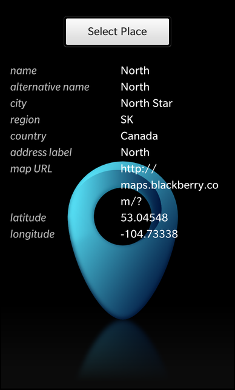

Place Picker Example
Files:
- placepicker/assets/FieldLabel.qml
- placepicker/assets/FieldNumber.qml
- placepicker/assets/PlacepickerScrollView.qml
- placepicker/assets/main.qml
- placepicker/assets/720x720/PlacepickerScrollView.qml
- placepicker/src/main.cpp
- placepicker/placepicker.pro
- placepicker/translations/placepicker.pro
Description
The Place Picker example allows the user to view the properties (like name, postal address or phone number) of a place that he selects from the address book, recent history or an online search.


Overview
In this example we'll learn how to use the PlacePicker class of the BB10 framework to select a place from various resources. The PlacePicker is a dialog with multiple pages, which let the user select a place from his address book, the list of recently used places, his favorites list or by searching for a specific location on the internet. On successful selection, the PlacePicker returns a Place object, that contains all the information about the place.
The UI
The UI of this sample application consists of a Button to open the PlacePicker dialog and a container with a list of FieldLabel objects.
Whenever the user clicks on the 'Select Place' button, the PlacePicker its selectPlace() method.
// The 'Select Place' button Button { horizontalAlignment: HorizontalAlignment.Center text: qsTr("Select Place") onClicked: placePicker.selectPlace() }
This method is a custom function that we introduced in this example to first open the dialog by calling show() and then storing the return value in the custom property 'selectedPlace'.
attachedObjects: [ PlacePicker { id: placePicker property variant selectedPlace function selectPlace() { selectedPlace = show() } } ]
The 'selectedPlace' property is used by the FieldLabel objects to show a single property of the selected Place object.
FieldLabel { title: qsTr("name") field: "name" selectedPlace: placePicker.selectedPlace } FieldLabel { title: qsTr("alternative name") field: "alternativeName" selectedPlace: placePicker.selectedPlace }
For this the FieldLabel provides the three properties 'title', 'field' and 'selectedPlace'. The 'title' property contains the title string of the field, which is shown on the left-hand side. The 'field' property contains the name of the Place's property that this field should display. The 'selectedPlace' property is bound against the 'selectedPlace' property of the PlacePicker object, so whenever it changes, the FieldLabels update their content automatically.
Container { id: root property alias title : titleLabel.text property string field property variant selectedPlace visible: (selectedPlace ? (selectedPlace[field] != "") : false) layout: StackLayout { orientation: LayoutOrientation.LeftToRight } // The title label Label { id: titleLabel layoutProperties: StackLayoutProperties { spaceQuota: 1 } opacity: 0.7 textStyle { base: SystemDefaults.TextStyles.BodyText color: Color.White fontStyle: FontStyle.Italic } } // The field value label Label { layoutProperties: StackLayoutProperties { spaceQuota: 1 } text: selectedPlace ? selectedPlace[field] : "" textStyle { base: SystemDefaults.TextStyles.BodyText color: Color.White } multiline: true } }
The FieldLabel is a custom control that is implemented in FieldLabel.qml. Its visibility depends on whether the Place's property (which it is configured for) contains any data. Instead of hard-coding the access to a specific property, like 'selectedPlace.name', we parameterized the access: selectedPlace["name"] or selectedPlace[field].